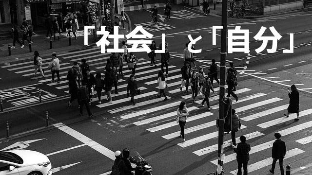

学生時代の友人に会うことがあります。この年になると同窓会などもよく行われ旧交を温める機会が増えるのですね。
ここで面白いのは、集ってくるメンバーを大きく分けると2つの集団に分類できること。
いまもバリバリ現役で活躍している人と、なんとなく精彩に欠ける人の2つです。
60を過ぎると社会の第一線から退き、孫の世話が楽しみという人もいる一方、ますます自分らしく人生を追求する「元気な人」にくっきり分かれるのかもしれません。
ところで私が気になるのは次の現象です。
学生時代は成績もよく親や先生の覚えもめでたく真面目に過ごしていた人たちが意外と精彩に欠け、成績も素行もイマイチな者が輝いていたりするということです。
これはもちろん主観的な見方で本当のところは分かりません。人生が充実しているかどうか外側から判断できるものではないからです。
しかし、面白味という点からいうと俄然アンチ秀才組の方が話していて楽しいし、自分らしくイキイキしている印象が強い。
マジメな秀才組は話も平凡で退屈。波乱万丈な物語、起伏に富んだ人生模様があるわけでもなくソコソコの社会的地位についたというのが、満足できる地点。何となく「終わった」人生という哀愁が漂ってきます。
ここで言いたいことは、マジメな秀才がダメで不マジメだった人間が良いなどということではありません。
自分らしく生きているか、社会のルールに沿うことを優先して「自分らしさ」を制限して生きているか、その違いは人生の充実度という観点からみると大きいということです。
そしてどちらのルートを通るかは子ども時代の教育によるところが大だと感じます。
社会に適合しすぎると自分らしさは失われる
「物事を計画的に行いなさい」「時間やルールは守りましょう」「勉強はどの教科も満遍なくやりましょう」「皆と仲良く協調することが大事」
このような言葉を親や先生から言われたことのない人はいないでしょう。
これらの言葉を真面目に受取り実行する子は「良い子」として認められ、実行しない子は叱られたり「不適格」のレッテルを貼られ「問題児」として扱われたりします。
こうして私たちは「教育」を通じて社会で通用する人間に育て上げられるわけですが、社会のルールに適合する余りその代償として生き生きした好奇心や自分らしさの発揮を犠牲にしがちだということを忘れています。
これは、社会性を身につけることと個性を発揮することの間には相反する力が働くからです。私たちは「社会」の存在を当たり前のことと感じていますが、社会は先人が長い時間をかけてつくり上げた人工的な構築（システム）であり、これがあるからこそ人間はムキ出しの生存競争（弱肉強食）を免れているわけです。
私たちは「社会」をつくることで共倒れを防ぎ、社会を維持することで結束し他の動物との生存競争を勝ち抜き、さらに文化や文明を発展させてきました。
しかし生物としての自然な人間の在り方を考えてみた場合、人間もやはり己の欲求に従って自由にふるまい、考え行動したいはずです。それが自然だからです。
自分の自由と可能性を最大限に発揮して生きることは生命力の発露として当然なのです。
社会という人工的なシステムは、その成り立ちからしてこの人間の自然な欲求を抑圧しがち。
社会は人間全体を活かすために、個々の人間の自由をある程度制限せざるを得ないからです。
これは良い悪いの問題ではありません。
人間が社会をつくり上げた以上、全体（集団）と個人（個性）の相克は永遠の課題としてあり続けるでしょう。
ただ問題なのは、現在のように「社会」があまりに高度に複雑化し、様々なルールや利害関係が錯綜する中で、人々は社会に適合することに神経をすり減らし多大なストレスを受けているのが現実だということです。
つまり、この巨大な「社会」が提示してくる「こうすべき」「ああすべき」というルールや価値観に踊らされ、他者との比較や「幸せの規準」から自分だけが取り残されていないかの恐怖に翻弄され、他者規準ではない本来の自分を生きていないのではないか。そういう懸念があるのです。
そうして人生の終末を迎えるころ「自分の人生はなんだったのだろう」「マジメに正しいと言われたことをやってきたのに、なぜこんなに空しいのか」という思いにとらわれるのです。
自分の欲求に従うことで社会に貢献する
では、人生を後悔しないためにはどうすればよいのでしょうか。もっと自分らしく自由に生きるためにはどうすればよいのか。
「社会のルールを無視して生きればいいの？」
というなら違います。それは社会のルールにとらわれています。無視しようとしている時点で既に自由からは程遠い在り方です。
「もっと自己中心にワガママで生きろというの？」
それも違います。自己中心とかワガママという発想自体が「社会」的価値観つまり他者の目を通しての見方だからです。
自分らしく自由に生きるとは、一切のとらわれのない心を持つ生き方であるといえます。
社会のルールは尊重するがそれにとらわれない。他者の価値観や生き方を尊重するがそれに振り回されない。その上で「常識」（多くの人が信じていること）に縛られずあらゆる可能性に心を開いていること。
社会が提示してくる様々な「有利な人生」の条件に従うより、自分の内側から沸き起こる情熱や好奇心にこそ従って生きること。
たとえそれが未知の領域であったとしても。
こうした生き方を実践していくと、たとえ困難があっても自分らしく生きている充実感と手応えを感じるものです。制限された生き方と違って自分の可能性をマックスに広げていく独特の喜びを得られるからです。
自分の内側からほとばしる欲求に従っていると、エネルギーは涸渇することなく流れ出し、疲れやストレスもあまり感じません。年齢がいくつであっても元気でバリバリやれる理由です。
こうして「自分のこと」を自由にやっていくと不思議なことが起こります。
自分のやりたいことを内的欲求に忠実に追究していくうちに、そのことが成果としてつまり社会的貢献という形で実を結ぶのです。
特別社会に貢献するという意図がなかったとしてもです。
これは結局、自己の欲求を掘り下げることによって本来の特質（才能）が開花し人々や社会に恩恵をもたらすからかもしれません。
いずれにせよ、こうして個人（個性）と社会の和解は成立するのです。人生の充実（幸福）と社会への貢献という、この上ない大きな宝を手にすることができるのです。
人生の終盤に向かうほどに充実し、喜びが増していくこと。これほど嬉しく幸せなことはあるでしょうか。
これは誰にでも可能な生き方なのです。
もし自分の人生があまりにも社会という「他者目線」に依存していると気づいたなら、自分の内側の欲求にもっと耳を傾けるようにすればよいのです。
人生の転機は誰にでも訪れます。そのとき思い切って方向転換できるかどうか。少しの勇気でその後の人生をガラリと変えることもできます。
もし、あなたが親なら我が子に「社会性を身につけさせる」ことばかり優先していないか振り返ってみましょう。
社会に適合させることを急ぐあまり、子どもの本来の「善き性質」を押さえ込んでいないか自らに問い直してみましょう。
社会（他人）の目を通しての「良い子」像を当てはめ、我が子にしかない「本来の素晴らしさ」を見失っていないか。
我が子が年老いたとき、人生の空しさを抱えこむことなくいつまでも生き生きと充実した人生を送って欲しいなら、子どもの特性を今認め伸ばすことにこそ気を配って頂きたい。
それが老いた教育者から親のみなさんに伝えたいことなのです。